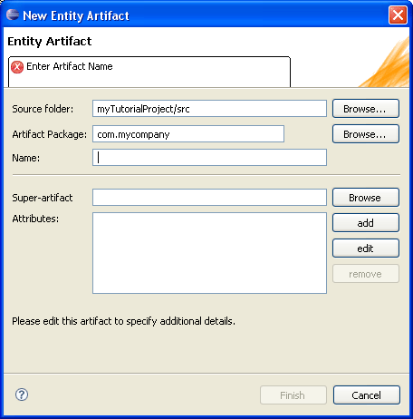
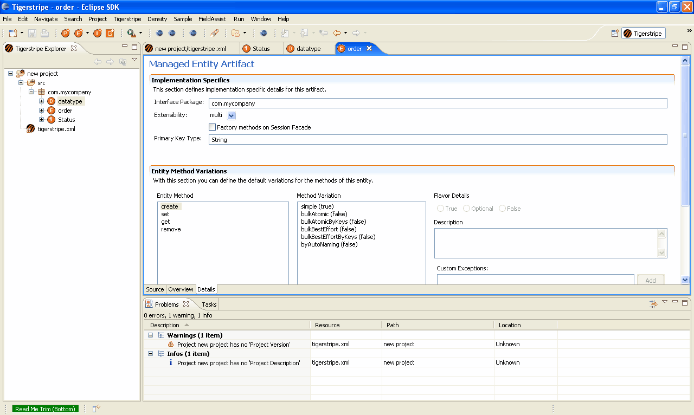

Enhancing your Model
In this tutorial, you created a very simplistic view of a Service Contract with:
- a single integration point
- a single operation
Tigerstripe Workbench allows you to enhance your information model and behaviour related to a service through model artifacts called Entity Artifacts. An entity represents a unique item that exists either logically or physically in the context of a Service. That is, the Entity Artifact is stored with a unique key in a database. An Entity Artifact is represented by the Entity icon ( ).
).
In this procedure, you will define an entity that models orders as they are handled and stored in an Order processing system. You will further define a relationship between your Integration Point (or Service Facade) and your Order entity to define how orders are processed through your service.
To create an Order entity:
- Click the Entity Artifact icon (). The New Entity Artifact dialog box appears.

- Enter a name for your new entity artifact. For this tutorial, name your entity artifact Order.
- Add an attribute for your entity artifact in the Attributes text box. Attributes outline the details of an entity. The newly created entity appears in your project.
- After you create your entity artifact, you need to create a new Integration Point (or Service Facade). Name your Integration Point OrderFacade.
- Navigate to the Details tab and define the specific details about your Integration Point. For this tutorial, add the Order entity you created as a Managed Entity. As a result, the Order entity will be managed through your service and consumers of your Service Facade can act upon orders; such as creating orders or deleting orders.
- Click Save to save your changes.
- Click the Generate icon (
 ) and review your generated code. You will notice a new .wsdl file for your new Service Facade and this file contains the operations to create, read, updated, and delete order.
) and review your generated code. You will notice a new .wsdl file for your new Service Facade and this file contains the operations to create, read, updated, and delete order.
Making the Order entity as a Managed Entity of the OrderFacade Service Facade, the Tigerstripe plug-ins created create, read, update, and delete operations on the resulting web service. This is by default.
To further control the operations for managed entities:
- Navigate to the Order entity.
- Add a process method on the Details tab of the Entity Artifact. On the Details tab, you can control whether create, read, update, and delete operations are enabled or not, and whether additional operations should be generated on your Service Facade.

- Click Save to save your changes.
- Click the Generate icon and review your generated code.
Congratulations! You've completed your first Tigerstripe Workbench tutorial!
Creating a New Project
Documenting your Project
Creating a Service End-point Model
Adding a Method to your Facade Model
Creating a Service Definition
Reviewing the Generated Code
-->
© copyright 2005, 2006, 2007 Cisco Systems, Inc. - All rights reserved